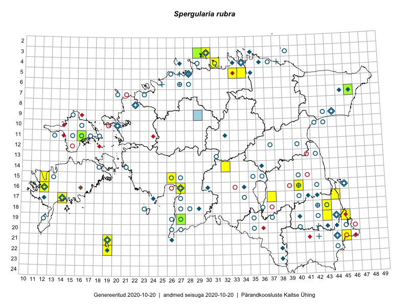

Spergularia rubra
Uuendatud: 2016-12-08
Kaardile koondatud taksonid: Spergularia rubra (L.) J.Presl & C.Presl

Kaart põhineb 17 vaatlusel. Taime on leitud 15 ruudust.
| Ruut | Vaatleja(d) | Vaatlusaeg | Kirje tüüp | Viide andmebaasikirjele |
|---|---|---|---|---|
| 14-32 | Maria Abakumova, Helle Mäemets | 2015-07-01 | ruut/ala | vaata PlutoFis |
| 15-26 | Indrek Tammekänd | 2015-05-12 | punkt | vaata PlutoFis |
| 15-12 | Mari Reitalu, Triin Reitalu | 2015-04-25 | ruut/ala | vaata PlutoFis |
| 16-27 | Meeli Mesipuu | 2015-06-17 | ruut/ala | vaata PlutoFis |
| 16-27 | Meeli Mesipuu | 2015-06-17 | punkt | vaata PlutoFis |
| 03-30 | Mari Reitalu, Tõnu Ploompuu, Ott Luuk, Peedu Saar | 2014-06-01 | ruut/ala | vaata PlutoFis |
| 03-29 | Ott Luuk, Mari Reitalu, Tõnu Ploompuu | 2014-06-01 | ruut/ala | vaata PlutoFis |
| 21-45 | Toomas Kukk, Tiit Hallikma, Johannes Kõdar | 2016-06-14 | ruut/ala | vaata PlutoFis |
| 19-45 | Toomas Kukk, Tiit Hallikma | 2016-06-17 | ruut/ala | vaata PlutoFis |
| 19-43 | Sander Laherand, Ott Luuk | 2016-06-17 | ruut/ala | vaata PlutoFis |
| 17-44 | Maret Gerz, Liina Oja | 2016-06-13 | ruut/ala | vaata PlutoFis |
| 18-43 | Maret Gerz, Liina Oja | 2016-06-17 | ruut/ala | vaata PlutoFis |
| 11-16 | Toomas Kukk, Thea Kull | 2016-08-08 | ruut/ala | vaata PlutoFis |
| 04-31 | Sander Laherand, Toomas Kukk | 2016-08-31 | ruut/ala | vaata PlutoFis |
| 22-19 | Ott Luuk, Meeli Mesipuu | 2016-09-10 | ruut/ala | vaata PlutoFis |
| 05-34 | Ott Luuk, Hannes Pehlak | 2016-07-27 | ruut/ala | vaata PlutoFis |
| 19-43 | Ott Luuk, Sander Laherand | 2016-06-17 | punkt | vaata PlutoFis |